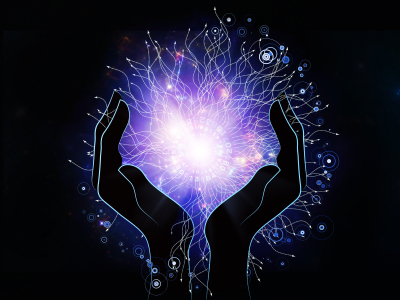

Le magnétisme pranique
Le magnétisme pranique est une science et un art anciens de guérison utilisant le prana, ou ki, ou énergie vitale, afin de guérir le corps physique tout entier.
Le corps physique est entouré d'un double éthérique, invisible pour la plupart des gens, et également appelé corps bioplasmique.
La guérison pranique implique la transmission de prana au patient et c’est par l’intermédiaire du corps bioplasmique que le prana est absorbé et redistribué dans tout le corps physique.
Une perte de ce prana est à la base de différents problèmes émotionnel et physique.
J'applique la méthode développée par Choa Kok Sui, guérisseur philippin. Elle a pour avantage et particularité de nettoyer les matières bioplasmiques (ou corps éthérique) avant de magnétiser. Ce qui permet d'éviter le déplacement du mal dans d'autres parties du corps.
Le magnétisme pranique travaille également sur les chakras. En renforçant l'aura, nous devenons plus forts face à la maladie.
Le magnétisme pranique guérit toute sorte de maux comme l'eczéma, les verrues, torticolis, maux de tête, de dents, d'oreille, ORL, douleurs abdominales, fatigue, problèmes digestifs, infections, stress, dépression etc...